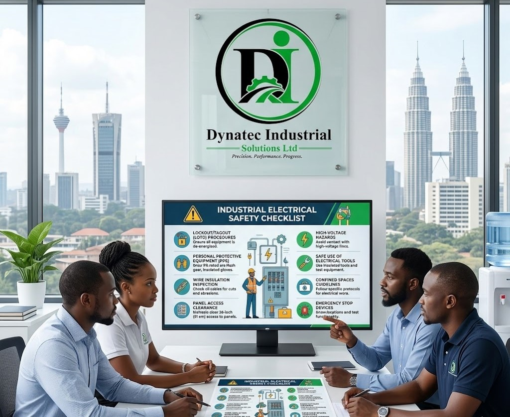

Electrical Safety
Industrial Electrical Safety Checklist for Businesses
Use this practical checklist to improve electrical inspections, earthing, load balancing and protective device management across your industrial facility.
Request Safety Audit
Checklist Highlights
Introduction
Electrical hazards pose significant risks in industrial environments. Incidents can cause injury, equipment damage and costly downtime. A practical electrical safety checklist helps businesses identify hazards and act before failures occur.
Safety quote
“Electrical safety is not an option — it's a necessity. A single oversight can lead to catastrophic consequences.”
Why Electrical Safety Matters
- Employee protection: reduce the risk of electrocution, arc flash injuries and burns.
- Equipment longevity: extend the life of expensive industrial machinery.
- Regulatory compliance: meet local and international electrical safety standards.
- Operational continuity: minimize downtime and production losses.
- Legal protection: avoid fines, penalties and liability exposure.
1. Inspection and Maintenance
Scheduled inspections are the foundation of electrical safety. Visual checks, electrical testing and thermography identify risks before they become critical.
Inspection Checklist
- Inspect cables for damage, fraying or wear.
- Check switchboards and control panels for corrosion or loose connections.
- Test emergency stops and safety interlocks monthly.
- Verify circuit breaker functionality and response times.
- Inspect transformer cooling systems and oil levels.
- Check lighting fixtures for proper operation and heat dissipation.
- Perform infrared thermography to detect hotspots.
Maintenance Schedule
- Weekly: visual inspections of visible components.
- Monthly: safety device testing and functional checks.
- Quarterly: electrical testing and circuit verification.
- Annually: comprehensive audits and thermography analysis.
2. Grounding and Earthing Systems
A properly designed earthing system safely dissipates fault currents and protects personnel from electric shock. Adequate grounding prevents dangerous voltage buildup on metallic surfaces.
Earthing Compliance Checklist
- Verify earth electrode resistance is ≤5Ω (or per local standards).
- Inspect earth bonding connections at metallic structures.
- Test earth fault loop impedance quarterly.
- Ensure machinery frames are properly bonded.
- Verify continuity of earth conductors throughout the facility.
- Inspect earth electrodes for corrosion or deterioration.
- Document earthing resistance measurements annually.
Important:
Poor earthing is one of the leading causes of electrical accidents. Regular testing ensures protection systems work as intended.
3. Load Balancing
Unbalanced loads cause overheating, equipment damage and higher energy costs. Proper phase distribution keeps systems stable and efficient.
Load Balancing Checklist
- Measure voltage and current on all three phases monthly.
- Ensure phase imbalance does not exceed 10%.
- Distribute single-phase loads evenly across phases.
- Monitor neutral conductor temperature for abnormal heating.
- Verify transformer capacity matches facility load requirements.
- Install power factor correction equipment if needed.
- Use harmonic analyzers to detect distortions.
Signs of Imbalanced Loads
- Overheating in transformers or cables.
- Flickering or dimming lights on specific circuits.
- Neutral conductor failures.
- Reduced motor efficiency and excessive vibration.
- Higher than expected electricity bills.
4. Protective Devices
Protective devices are the last line of defense against electrical faults. They must be installed, tested and maintained properly to work in emergencies.
Protective Devices Checklist
- Test RCDs monthly and verify trip time is below 30ms.
- Verify circuit breaker ratings match cable specifications.
- Inspect all fuses for proper sizing and condition.
- Test surge protectors and SPDs.
- Install arc flash mitigation equipment where needed.
- Verify isolation switches are accessible and functional.
- Document all protective device testing with dates and results.
Key Protective Devices
- Residual Current Devices (RCDs): detect earth faults and disconnect power quickly.
- Circuit Breakers: protect against overcurrent and short circuits.
- Fuses: provide simple, cost-effective overcurrent protection.
- Surge Protective Devices (SPDs): guard against voltage surges from lightning or switching events.
- Arc Flash Relays: speed fault clearing to reduce arc flash hazards.
5. Additional Safety Measures
Safety Documentation
Maintain detailed records of inspections, tests, maintenance work and incidents. Documentation is essential for compliance and liability protection.
Employee Training
Provide regular electrical safety training so staff understand hazards, safe work practices and emergency response procedures.
PPE and LOTO
Provide insulated gloves, safety glasses, arc-rated clothing and insulated tools. Use lockout/tagout procedures to prevent accidental equipment startup during maintenance.
Implementation Strategy
- Conduct an audit: assess current electrical safety status and identify gaps.
- Develop a plan: create a safety program with timelines and responsibilities.
- Allocate resources: budget for testing equipment, training and repairs.
- Train personnel: ensure staff understand procedures and safety protocols.
- Implement improvements: make necessary upgrades and corrections.
- Monitor compliance: establish regular review schedules and track metrics.
- Improve continuously: update procedures based on lessons learned and regulation changes.
Conclusion
An effective electrical safety program requires ongoing commitment. By applying this checklist to inspection, earthing, load balancing and protective devices, your business can reduce electrical hazards and create a safer work environment.
Investing in electrical safety today prevents costly incidents, protects people, and supports regulatory compliance. Don’t wait for an accident — start implementing these measures now and review them regularly.
Take Action Today
Schedule a comprehensive electrical audit and commit to making electrical safety a top facility priority.